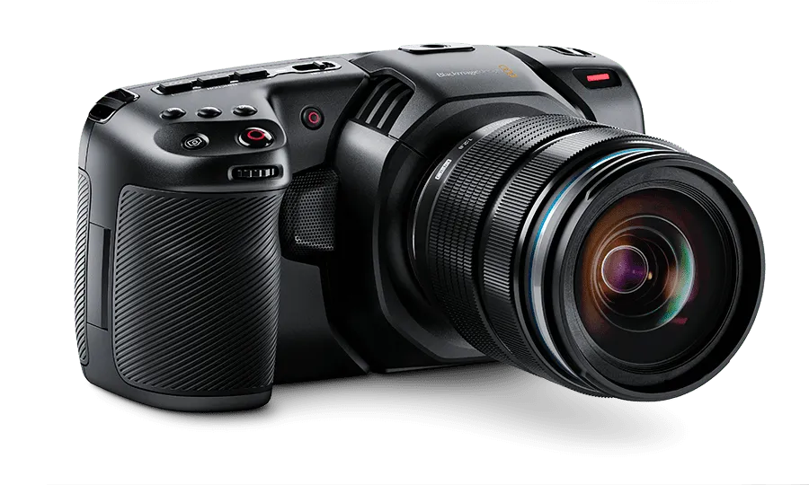
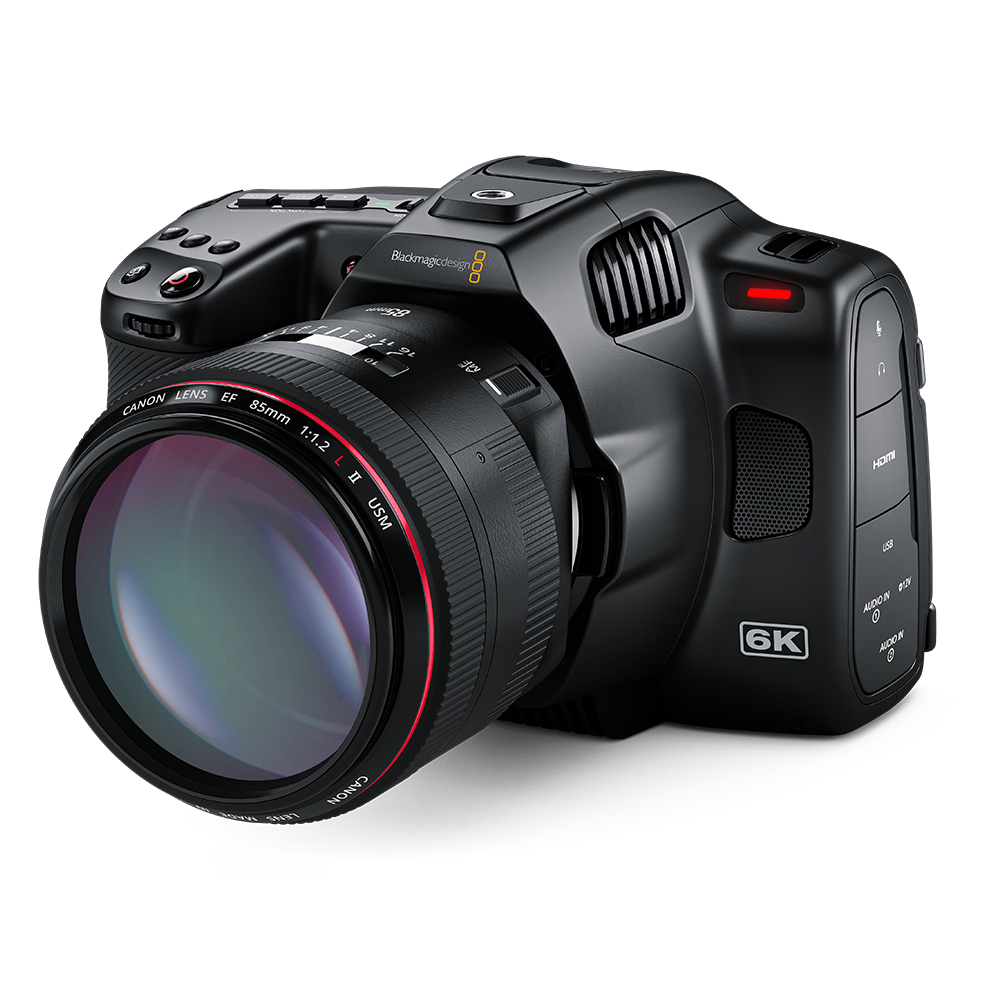
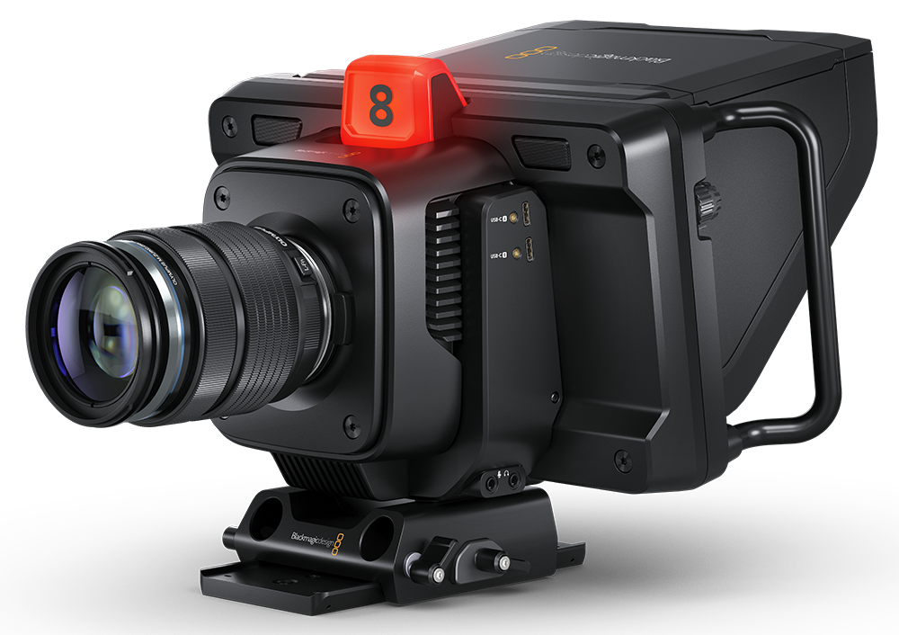
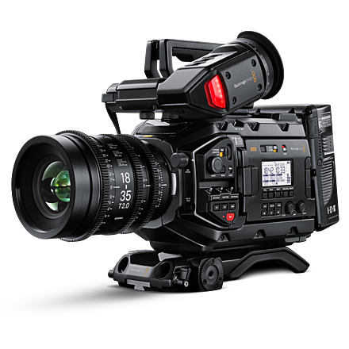
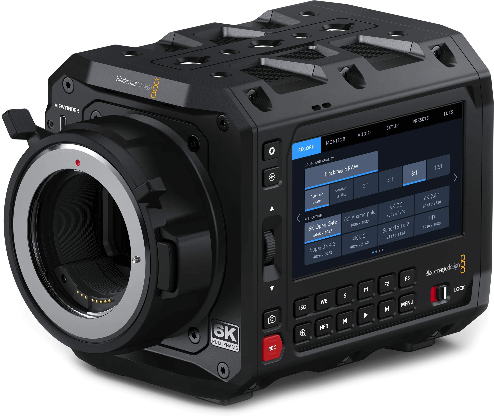
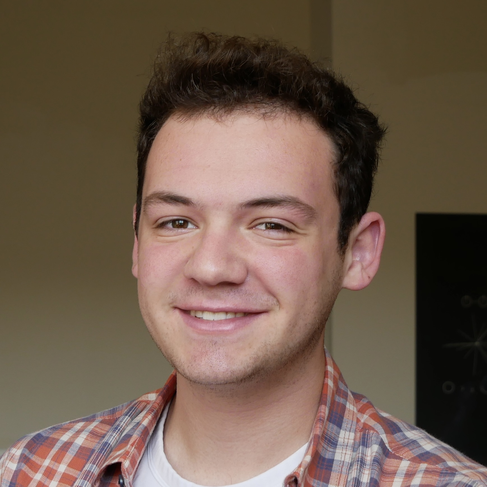

_Welcome!_ I'm glad you could join me in this tutorial series. I noticed a lack of beginner-friendly tutorials for [Blackmagic Design's](https://blackmagicdesign.com) REST API for controlling cameras, HyperDecks, and other BMD products. I'm making these tutorials to help anyone who might be struggling themselves.
These tutorials will serve as a public resource for learning how these APIs work and how to incorporate them into your own workflow/projects. We'll start from the basics and build our way up to a fully custom, functional [Web UI](https://github.com/DylanSpeiser/BM-Camera-Control-WebUI) that can control a camera (or a HyperDeck with minimal tweaking) over the network.
## Official Documentation
Blackmagic hosts the official documentation for the REST API [here](https://documents.blackmagicdesign.com/DeveloperManuals/RESTAPIforBlackmagicCameras.pdf?_v=1696143610000). The first few pages are important, so make sure to read them! This documentation outlines all of the commands and data that can interface with the camera, and is the basis of this tutorial series.
Dylan Speiser is a Computer Engineer and cinematographer from New York, NY. Studying at the University of Maryland, Dylan's passion for the technology of storytelling is a main focus of his studies and extracurriculars. He is Vice President of the Maryland Filmmakers club and acts in the Maryland Shakespeare Players' semesterly productions. To learn more about Dylan and his portfolio, check out speiserproductions.com.
